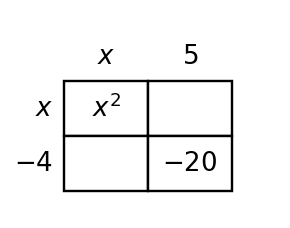

1. Simplify $3(x^2-2x+4)$.
2. Complete the missing cell products in the area model, then combine like terms to expand the product.

3. A student simplifies $(5x^2-x+3)-(2x^2+4x-1)$ as $3x^2+3x+2$. Identify the error and correct the result.
4. Simplify $(4x^2-3x+2)-(x^2+5x-6)$.
5. Multiply $(x+2)(x-6)$ and write the result in standard form.
6. Use the table to decide whether $(x-1)(x+3)$ and $x^2+2x-3$ are equivalent, then confirm by multiplication.
| x | $(x-1)(x+3)$ | $x^2+2x-3$ |
|---|---|---|
| -1 | -4 | -4 |
| 0 | -3 | -3 |
| 2 | 5 | 5 |